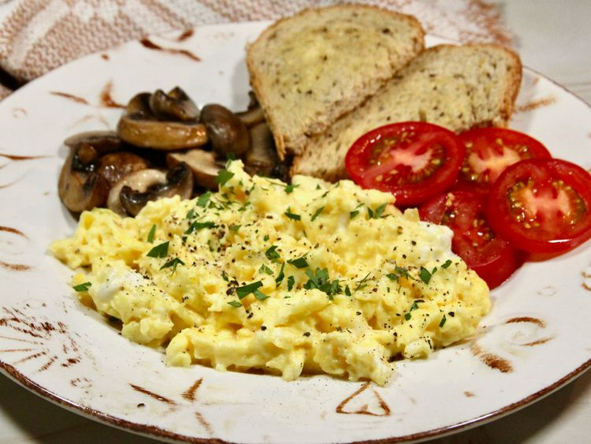

Back to Homepage
Boursin Scrambled Eggs

Description
These Boursin scrambled eggs, silky smooth with a subtle savory flavor, are what I like to make for breakfast or brunch when we have overnight friends or family visiting. We enjoy them served with sautéed mushrooms and sliced tomatoes on the side.
Ingredients
- 4 large eggs
- 3 tablespoons half-and-half
- 1 pinch salt, plus more to taste
- 1 tablespoon unsalted butter
- 2 tablespoons garlic and fine herbs, spreadable cheese.
- Freshly ground black pepper to taste
- Chopped fresh parsley or chives, for garnish
Steps
- Whisk eggs, half-and-half, and a pinch of salt together in a small bowl.
- Melt butter in a medium nonstick pan over medium-low heat. When butter starts to bubble, pour in egg mixture. Using a silicone spatula, gently swirl the eggs around in circles from the outside in, without stopping, until you start to see small curds.
- Switch from making circles to making long sweeps across the pan until you see larger curds. When eggs are about 75% cooked, gently fold in cheese. The eggs now should be softly set and still a little runny in places.
- Remove the skillet from the heat, and set aside till it cooks to your preferred consistency.
- Garnish with parsley or chives, and serve immediately